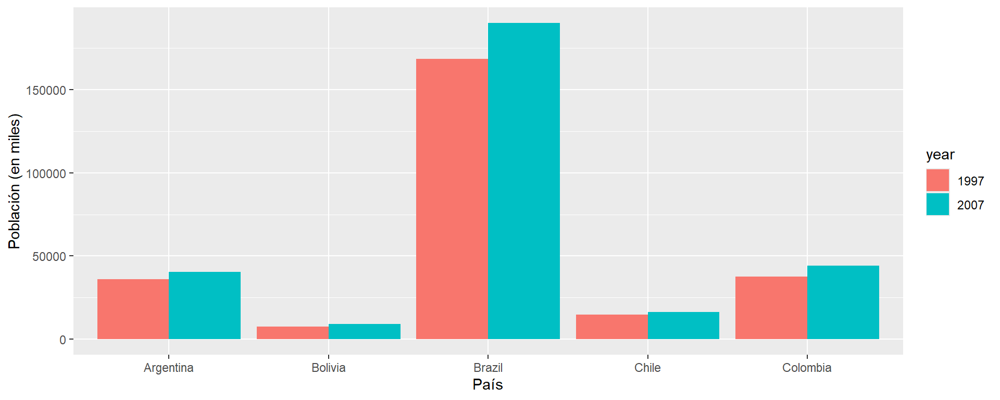
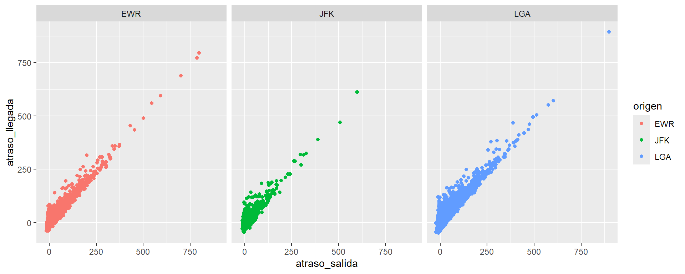

producto 2018 2019 2020
1 A 100 120 130
2 B 150 180 160
3 C 200 220 210
Capacitación en R y herramientas de productividad
Nivel básico
Mayo 2024
Contenidos
- Estructuración de tablas: pivot_longer
- Estructuración de tablas: pivot_wider
- Unión de tablas
- Visualización de datos con ggplot
- Ejercicios
Estructuración de tablas
- En ocasiones necesitamos transformar el formato de nuestros dataframes, desde wide a long, o viceversa.
- Un dataframe en formato wide (ancho) es un tipo de organización de datos en el que cada fila representa un único caso o entidad, y las columnas contienen múltiples variables.
- Es común cuando las variables son medidas en diferentes momentos o categorías, como en series temporales.
Estructuración de tablas
- Un DataFrame en formato long (largo) es un tipo de organización de datos en el que cada fila representa una observación única y cada variable tiene su propia columna. En otras palabras, hay una sola columna para todas las observaciones de una variable y una columna adicional que identifica la variable.
- Es común cuando se quiere facilitar el manejo y análisis de datos, especialmente para operaciones como agregaciones, visualizaciones y análisis estadísticos.
# A tibble: 9 × 3
producto anio ventas
<chr> <chr> <dbl>
1 A 2018 100
2 A 2019 120
3 A 2020 130
4 B 2018 150
5 B 2019 180
6 B 2020 160
7 C 2018 200
8 C 2019 220
9 C 2020 210Estructuración de tablas: pivot_longer
- Función pivot_longer(): es una función del paquete “tidyr” utilizada para pivotear un dataframe de formato ancho a uno de formato largo. Esta función incrementa el número de filas y disminuye el número de columnas.
- Sus argumentos son:
- data: el dataframe a ser modificado.
- cols: especifica las columnas que queremos “alargar”, es decir, las columnas que contienen los valores que queremos mover a una sola columna
- names_to: especifica el nombre de la nueva columna que contendrá los nombres de las columnas alargadas.
- values_to: especifica el nombre de la nueva columna que contendrá los valores de las columnas alargadas.
- Veamos cómo funciona:
Estructuración de tablas: pivot_longer
library(dplyr)
#install.packages("tidyr")
library(tidyr)
ventas_long <- ventas_wide %>%
pivot_longer(cols = -producto, names_to = "anio", values_to = "ventas")
ventas_long# A tibble: 9 × 3
producto anio ventas
<chr> <chr> <dbl>
1 A 2018 100
2 A 2019 120
3 A 2020 130
4 B 2018 150
5 B 2019 180
6 B 2020 160
7 C 2018 200
8 C 2019 220
9 C 2020 210Estructuración de tablas: pivot_wider
- Función pivot_wider(): es una función del paquete “tidyr” utilizada para pivotear un dataframe de formato largo a uno de formato ancho. Esta función disminuye el número de filas y aumenta el número de columnas.
- Sus argumentos son:
- data: el dataframe a ser modificado.
- names_from: qué columnas se extenderán y cuyos valores se convertirán en nombres de nuevas columnas.
- values_from: qué columnas se utilizarán para llenar los valores en las nuevas columnas creadas por la extensión de la variable especificada en names_from.
- Veamos cómo funciona:
Estructuración de tablas: pivot_wider
# A tibble: 9 × 3
producto anio ventas
<chr> <chr> <dbl>
1 A 2018 100
2 A 2019 120
3 A 2020 130
4 B 2018 150
5 B 2019 180
6 B 2020 160
7 C 2018 200
8 C 2019 220
9 C 2020 210Ejercicio 1
- Cargue la librería “datos” y almacene el dataframe “encuesta” como “encuesta”.
- Agrupe el dataframe encuesta por las variables “anio” e “ingreso” y, usando un summarise(), calcule las horas_tv promedio usando la función mean(). Llame a esta variable “horas_prom”. Almacene el dataframe resultante como “encuesta_agrupado”. Nota: recuerde usar el argumento na.rm = TRUE para que no considere los valores NA.
- La tabla debería verse así:
# A tibble: 125 × 3
# Groups: anio [8]
anio ingreso horas_prom
<int> <fct> <dbl>
1 2000 Sin respuesta 2.33
2 2000 No sabe 4.05
3 2000 Se niega a responder 2.49
4 2000 25000 o más 2.26
5 2000 20000 - 24999 2.65
6 2000 15000 - 19999 2.85
7 2000 10000 - 14999 2.65
8 2000 8000 - 9999 3.27
9 2000 7000 - 7999 2.78
10 2000 6000 - 6999 2.96
# ℹ 115 more rowsEjercicio 1
- Utilizando la función pivot_wider(), convierta el dataframe “encuesta_agrupado” a formato ancho. El nombre de las columnas debe ser el ingreso y los valores las horas de tv promedio. Almacene el dataframe resultante como “encuesta_wide”
- La tabla debería verse así:
# A tibble: 8 × 17
# Groups: anio [8]
anio `Sin respuesta` `No sabe` `Se niega a responder` `25000 o más`
<int> <dbl> <dbl> <dbl> <dbl>
1 2000 2.33 4.05 2.49 2.26
2 2002 3.75 2.7 2.18 2.15
3 2004 2.75 3.44 2.54 2.11
4 2006 3 2.58 2.13 2.30
5 2008 3.06 4.07 2.36 2.26
6 2010 NA 2.9 3.25 2.22
7 2012 NA 4.63 2.40 2.22
8 2014 NA 1.78 1.96 2.23
# ℹ 12 more variables: `20000 - 24999` <dbl>, `15000 - 19999` <dbl>,
# `10000 - 14999` <dbl>, `8000 - 9999` <dbl>, `7000 - 7999` <dbl>,
# `6000 - 6999` <dbl>, `5000 - 5999` <dbl>, `4000 - 4999` <dbl>,
# `3000 - 3999` <dbl>, `1000 - 2999` <dbl>, `Menos de 1000` <dbl>,
# `No aplica` <dbl>Ejercicio 1
- Transforme el dataframe “encuesta_wide” a su estructura original, es decir, en formato long, usando pivot_longer(). El dataframe resultante debe ser igual a “encuesta_agrupado”. Almacene este dataframe como “encuesta_long”.
Solución ejercicio 1
- Cargue la librería “datos” y almacene el dataframe “encuesta” como “encuesta”.
Solución ejercicio 1
- Agrupe el dataframe encuesta por las variables “anio” e “ingreso” y, usando un summarise(), calcule las horas_tv promedio usando la función mean(). Llame a esta variable “horas_prom”. Almacene el dataframe resultante como “encuesta_agrupado”. Nota: recuerde usar el argumento na.rm = TRUE para que no considere los valores NA.
encuesta_agrupado <- encuesta %>%
group_by(anio, ingreso) %>%
summarise(horas_prom = mean(horas_tv, na.rm = TRUE))
encuesta_agrupado# A tibble: 125 × 3
# Groups: anio [8]
anio ingreso horas_prom
<int> <fct> <dbl>
1 2000 Sin respuesta 2.33
2 2000 No sabe 4.05
3 2000 Se niega a responder 2.49
4 2000 25000 o más 2.26
5 2000 20000 - 24999 2.65
6 2000 15000 - 19999 2.85
7 2000 10000 - 14999 2.65
8 2000 8000 - 9999 3.27
9 2000 7000 - 7999 2.78
10 2000 6000 - 6999 2.96
# ℹ 115 more rowsSolución ejercicio 1
- Utilizando la función pivot_wider(), convierta el dataframe “encuesta_agrupado” a formato ancho. El nombre de las columnas debe ser el ingreso y los valores las horas de tv promedio. Almacene el dataframe resultante como “encuesta_wide”
encuesta_wide <- encuesta_agrupado %>%
pivot_wider(names_from = ingreso, values_from = horas_prom)
encuesta_wide# A tibble: 8 × 17
# Groups: anio [8]
anio `Sin respuesta` `No sabe` `Se niega a responder` `25000 o más`
<int> <dbl> <dbl> <dbl> <dbl>
1 2000 2.33 4.05 2.49 2.26
2 2002 3.75 2.7 2.18 2.15
3 2004 2.75 3.44 2.54 2.11
4 2006 3 2.58 2.13 2.30
5 2008 3.06 4.07 2.36 2.26
6 2010 NA 2.9 3.25 2.22
7 2012 NA 4.63 2.40 2.22
8 2014 NA 1.78 1.96 2.23
# ℹ 12 more variables: `20000 - 24999` <dbl>, `15000 - 19999` <dbl>,
# `10000 - 14999` <dbl>, `8000 - 9999` <dbl>, `7000 - 7999` <dbl>,
# `6000 - 6999` <dbl>, `5000 - 5999` <dbl>, `4000 - 4999` <dbl>,
# `3000 - 3999` <dbl>, `1000 - 2999` <dbl>, `Menos de 1000` <dbl>,
# `No aplica` <dbl>Solución ejercicio 1
- Transforme el dataframe “encuesta_wide” a su estructura original, es decir, en formato long usando pivot_longer(). El dataframe resultante debe ser igual a “encuesta_agrupado”. Almacene este dataframe como “encuesta_long”.
encuesta_long <- encuesta_wide %>%
pivot_longer(cols = -anio, names_to = "ingreso", values_to = "horas_prom")
encuesta_long# A tibble: 128 × 3
# Groups: anio [8]
anio ingreso horas_prom
<int> <chr> <dbl>
1 2000 Sin respuesta 2.33
2 2000 No sabe 4.05
3 2000 Se niega a responder 2.49
4 2000 25000 o más 2.26
5 2000 20000 - 24999 2.65
6 2000 15000 - 19999 2.85
7 2000 10000 - 14999 2.65
8 2000 8000 - 9999 3.27
9 2000 7000 - 7999 2.78
10 2000 6000 - 6999 2.96
# ℹ 118 more rowsUnión de tablas
- Una tarea común en el análisis de datos es reunir diferentes conjuntos de datos, de modo que podamos combinar columnas de dos (o más) tablas.
- Esto se puede lograr utilizando la familia de funciones join en dplyr.
- Existen diferentes tipos de uniones, que se pueden representar mediante una serie de diagramas de Venn:
Unión de tablas: left_join
# A tibble: 3 × 2
name band
<chr> <chr>
1 Mick Stones
2 John Beatles
3 Paul Beatles# A tibble: 3 × 2
name plays
<chr> <chr>
1 John guitar
2 Paul bass
3 Keith guitar# A tibble: 3 × 3
name band plays
<chr> <chr> <chr>
1 Mick Stones <NA>
2 John Beatles guitar
3 Paul Beatles bass Unión de tablas: left_join
- Qué pasa si el nombre de las columnas identificadoras no son iguales?
# A tibble: 3 × 2
name band
<chr> <chr>
1 Mick Stones
2 John Beatles
3 Paul Beatles# A tibble: 3 × 2
artist plays
<chr> <chr>
1 John guitar
2 Paul bass
3 Keith guitar# A tibble: 3 × 3
name band plays
<chr> <chr> <chr>
1 Mick Stones <NA>
2 John Beatles guitar
3 Paul Beatles bass Unión de tablas: left_join
- Qué pasa si necesitamos más de una variable identificadora?
# Conjunto de datos de ventas
ventas <- data.frame(vendedor = c("Juan", "María", "Juan", "Pedro", "María", "Pedro"),
departamento = c("Marketing", "Marketing", "Ventas", "Ventas", "Marketing", "Ventas"),
ventas = c(100, 150, 200, 120, 180, 160))
ventas vendedor departamento ventas
1 Juan Marketing 100
2 María Marketing 150
3 Juan Ventas 200
4 Pedro Ventas 120
5 María Marketing 180
6 Pedro Ventas 160# Conjunto de datos de vendedores
vendedores <- data.frame(vendedor = c("Juan", "María", "Pedro", "Juan"),
departamento = c("Ventas", "Marketing", "Ventas", "Marketing"),
experiencia = c(5, 7, 3, 2))
vendedores vendedor departamento experiencia
1 Juan Ventas 5
2 María Marketing 7
3 Pedro Ventas 3
4 Juan Marketing 2Unión de tablas: right_join
# A tibble: 3 × 2
name band
<chr> <chr>
1 Mick Stones
2 John Beatles
3 Paul Beatles# A tibble: 3 × 2
name plays
<chr> <chr>
1 John guitar
2 Paul bass
3 Keith guitar# A tibble: 3 × 3
name band plays
<chr> <chr> <chr>
1 John Beatles guitar
2 Paul Beatles bass
3 Keith <NA> guitarUnión de tablas: full_join
# A tibble: 3 × 2
name band
<chr> <chr>
1 Mick Stones
2 John Beatles
3 Paul Beatles# A tibble: 3 × 2
name plays
<chr> <chr>
1 John guitar
2 Paul bass
3 Keith guitar# A tibble: 4 × 3
name band plays
<chr> <chr> <chr>
1 Mick Stones <NA>
2 John Beatles guitar
3 Paul Beatles bass
4 Keith <NA> guitarUnión de tablas: anti_join
# A tibble: 3 × 2
name band
<chr> <chr>
1 Mick Stones
2 John Beatles
3 Paul Beatles# A tibble: 3 × 2
name plays
<chr> <chr>
1 John guitar
2 Paul bass
3 Keith guitar# A tibble: 1 × 2
name band
<chr> <chr>
1 Mick StonesEjercicio 2
- Para este ejercicio usaremos varias bases provenientes del paquete “nycflights13”.
- Este paquete contiene 5 dataframes:
- flights: contiene información de todos los vuelos.
- airlines: contiene el código de cada aerolínea (“carrier”) y su nombre completo (“name”). La columna “carrier” identifica a cada aerolínea en el dataframe “fligts”, lo que la convierte en la llave principal para la unión.
- airports: contiene el nombre y localización de los aeropuertos. Puede identifcar cada aeropuerto por su código de tres letras (“faa”), haciendo de esta columna en la llave principal para la unión con “flights”.
- planes: registra información de construcción sobre cada uno de los aviones utilizados. Puede identificar un avión por su número de cola (“tailnum”), haciendo “tailnum” en la llave principal para la unión con “flights”.
- weather: registra datos meteorológicos por hora para cada uno de los tres aeropuertos de Nueva York. Puede identificar cada observación mediante la combinación ubicación y hora, haciendo que “origin” y “time_hour” sean la llave principal compuesta.
Ejercicio 2
- Instale y cargue el paquete “nycflights13”.
- Sobrescriba el dataframe “flights” seleccionando las columnas “time_hour”, “origin”, “dest”, “tailnum” y “carrier”.
- Haga un left_join entre “flights” y “airlines” usando la llave correspondiente.
- Haga un left_join entre “flights” y “planes” usando la llave correspondiente.
- Haga un left_join entre “flights” y “weather” usando las llaves correspondientes.
- Haga un anti_join entre “flights” y “planes” usando la llave correspondiente.
Solución ejercicio 2
- Instale y cargue el paquete “nycflights13”.
Solución ejercicio 2
- Sobrescriba el dataframe “flights” seleccionando las columnas “time_hour”, “origin”, “dest”, “tailnum” y “carrier”.
# A tibble: 336,776 × 5
time_hour origin dest tailnum carrier
<dttm> <chr> <chr> <chr> <chr>
1 2013-01-01 05:00:00 EWR IAH N14228 UA
2 2013-01-01 05:00:00 LGA IAH N24211 UA
3 2013-01-01 05:00:00 JFK MIA N619AA AA
4 2013-01-01 05:00:00 JFK BQN N804JB B6
5 2013-01-01 06:00:00 LGA ATL N668DN DL
6 2013-01-01 05:00:00 EWR ORD N39463 UA
7 2013-01-01 06:00:00 EWR FLL N516JB B6
8 2013-01-01 06:00:00 LGA IAD N829AS EV
9 2013-01-01 06:00:00 JFK MCO N593JB B6
10 2013-01-01 06:00:00 LGA ORD N3ALAA AA
# ℹ 336,766 more rowsSolución ejercicio 2
- Haga un left_join entre “flights” y “airlines” usando la llave correspondiente.
# A tibble: 336,776 × 6
time_hour origin dest tailnum carrier name
<dttm> <chr> <chr> <chr> <chr> <chr>
1 2013-01-01 05:00:00 EWR IAH N14228 UA United Air Lines Inc.
2 2013-01-01 05:00:00 LGA IAH N24211 UA United Air Lines Inc.
3 2013-01-01 05:00:00 JFK MIA N619AA AA American Airlines Inc.
4 2013-01-01 05:00:00 JFK BQN N804JB B6 JetBlue Airways
5 2013-01-01 06:00:00 LGA ATL N668DN DL Delta Air Lines Inc.
6 2013-01-01 05:00:00 EWR ORD N39463 UA United Air Lines Inc.
7 2013-01-01 06:00:00 EWR FLL N516JB B6 JetBlue Airways
8 2013-01-01 06:00:00 LGA IAD N829AS EV ExpressJet Airlines Inc.
9 2013-01-01 06:00:00 JFK MCO N593JB B6 JetBlue Airways
10 2013-01-01 06:00:00 LGA ORD N3ALAA AA American Airlines Inc.
# ℹ 336,766 more rowsSolución ejercicio 2
- Haga un left_join entre “flights” y “planes” usando la llave correspondiente.
# A tibble: 336,776 × 13
time_hour origin dest tailnum carrier year type manufacturer
<dttm> <chr> <chr> <chr> <chr> <int> <chr> <chr>
1 2013-01-01 05:00:00 EWR IAH N14228 UA 1999 Fixed wi… BOEING
2 2013-01-01 05:00:00 LGA IAH N24211 UA 1998 Fixed wi… BOEING
3 2013-01-01 05:00:00 JFK MIA N619AA AA 1990 Fixed wi… BOEING
4 2013-01-01 05:00:00 JFK BQN N804JB B6 2012 Fixed wi… AIRBUS
5 2013-01-01 06:00:00 LGA ATL N668DN DL 1991 Fixed wi… BOEING
6 2013-01-01 05:00:00 EWR ORD N39463 UA 2012 Fixed wi… BOEING
7 2013-01-01 06:00:00 EWR FLL N516JB B6 2000 Fixed wi… AIRBUS INDU…
8 2013-01-01 06:00:00 LGA IAD N829AS EV 1998 Fixed wi… CANADAIR
9 2013-01-01 06:00:00 JFK MCO N593JB B6 2004 Fixed wi… AIRBUS
10 2013-01-01 06:00:00 LGA ORD N3ALAA AA NA <NA> <NA>
# ℹ 336,766 more rows
# ℹ 5 more variables: model <chr>, engines <int>, seats <int>, speed <int>,
# engine <chr>Solución ejercicio 2
- Haga un left_join entre “flights” y “weather” usando las llaves correspondientes.
# A tibble: 336,776 × 18
time_hour origin dest tailnum carrier year month day hour
<dttm> <chr> <chr> <chr> <chr> <int> <int> <int> <int>
1 2013-01-01 05:00:00 EWR IAH N14228 UA 2013 1 1 5
2 2013-01-01 05:00:00 LGA IAH N24211 UA 2013 1 1 5
3 2013-01-01 05:00:00 JFK MIA N619AA AA 2013 1 1 5
4 2013-01-01 05:00:00 JFK BQN N804JB B6 2013 1 1 5
5 2013-01-01 06:00:00 LGA ATL N668DN DL 2013 1 1 6
6 2013-01-01 05:00:00 EWR ORD N39463 UA 2013 1 1 5
7 2013-01-01 06:00:00 EWR FLL N516JB B6 2013 1 1 6
8 2013-01-01 06:00:00 LGA IAD N829AS EV 2013 1 1 6
9 2013-01-01 06:00:00 JFK MCO N593JB B6 2013 1 1 6
10 2013-01-01 06:00:00 LGA ORD N3ALAA AA 2013 1 1 6
# ℹ 336,766 more rows
# ℹ 9 more variables: temp <dbl>, dewp <dbl>, humid <dbl>, wind_dir <dbl>,
# wind_speed <dbl>, wind_gust <dbl>, precip <dbl>, pressure <dbl>,
# visib <dbl>Solución ejercicio 2
- Haga un anti_join entre “flights” y “planes” usando la llave correspondiente.
# A tibble: 52,606 × 5
time_hour origin dest tailnum carrier
<dttm> <chr> <chr> <chr> <chr>
1 2013-01-01 06:00:00 LGA ORD N3ALAA AA
2 2013-01-01 06:00:00 LGA DFW N3DUAA AA
3 2013-01-01 06:00:00 LGA ATL N542MQ MQ
4 2013-01-01 06:00:00 LGA DTW N730MQ MQ
5 2013-01-01 06:00:00 EWR ORD N9EAMQ MQ
6 2013-01-01 06:00:00 JFK SFO N532UA UA
7 2013-01-01 06:00:00 LGA MIA N3EMAA AA
8 2013-01-01 06:00:00 LGA MSP N518MQ MQ
9 2013-01-01 06:00:00 JFK SJU N3BAAA AA
10 2013-01-01 06:00:00 LGA ORD N3CYAA AA
# ℹ 52,596 more rowsVisualización de datos con ggplot
- ggplot2 es un paquete popular de visualización de datos en el lenguaje de programación R.
- Permite a los usuarios crear una amplia variedad de gráficos estadísticos personalizables y de alta calidad, lo que lo convierte en una herramienta valiosa para la exploración y presentación de datos.
- El término ggplot2 se relaciona con el nombre del paquete.
- Usamos la función ggplot() para producir los gráficos cuando usamos el paquete. Por lo tanto, ggplot() es el comando y el paquete completo se llama ggplot2.
- Los gráficos se componen de capas, cada una definida por su propio conjunto de reglas.
Visualización de datos con ggplot
- Veamos cómo hacer un gráfico de barras simple usando geom_bar
- Para esto usaremos la base llamada “gapminder”
country continent year lifeExp
Afghanistan: 12 Africa :624 Min. :1952 Min. :23.60
Albania : 12 Americas:300 1st Qu.:1966 1st Qu.:48.20
Algeria : 12 Asia :396 Median :1980 Median :60.71
Angola : 12 Europe :360 Mean :1980 Mean :59.47
Argentina : 12 Oceania : 24 3rd Qu.:1993 3rd Qu.:70.85
Australia : 12 Max. :2007 Max. :82.60
(Other) :1632
pop gdpPercap
Min. :6.001e+04 Min. : 241.2
1st Qu.:2.794e+06 1st Qu.: 1202.1
Median :7.024e+06 Median : 3531.8
Mean :2.960e+07 Mean : 7215.3
3rd Qu.:1.959e+07 3rd Qu.: 9325.5
Max. :1.319e+09 Max. :113523.1
Visualización de datos con ggplot
Visualización de datos con ggplot
- Veamos cómo hacer un gráfico de barras seteando la longitud de la barra
Visualización de datos con ggplot
- Podemos agregar más elementos como títulos, colores y etiquetas…
gapminder %>%
filter(year==2007) %>%
group_by(continent) %>%
summarise(gdpPercap_prom = mean(gdpPercap)) %>%
mutate(gdpPercap_prom = round(gdpPercap_prom, 0)) %>%
ggplot() +
aes(x = continent, y = gdpPercap_prom, label = gdpPercap_prom) +
geom_bar(stat = "identity", fill = "blue") +
labs(x = "Continente", y = "PIB per cápita promedio", title = "PIB per cápita promedio por continente (2017)") +
geom_label()Visualización de datos con ggplot
- Colocando barras una al lado de la otra usando position = “dodge”
gapminder %>%
filter(year==1997 | year==2007) %>%
filter(country %in% c("Chile", "Argentina", "Bolivia", "Brazil", "Colombia")) %>%
mutate(pop = pop/1000,
year = as.factor(year)) %>%
ggplot() +
aes(x = country, y = pop, fill = year) +
geom_bar(stat = "identity", position = "dodge") +
labs(x = "País", y = "Población (en miles)")
Visualización de datos con ggplot
- Hacer gráficos de líneas usando geom_line()
Visualización de datos con ggplot
- Hacer gráficos de puntos o scatterplot usando geom_ponit()
Visualización de datos con ggplot
- Hacer gráficos de puntos o scatterplot usando geom_ponit()
Visualización de datos con ggplot
- Usando facet_wrap()
Ejercicio 3
- Genere un gráfico de barras simple que cuente el número de veces que aparece cada aerolínea usando el dataframe “vuelos”.
- Para generar el siguiente gráfico de barras, agrupe el dataframe por “aerolínea” y usando la función summarise() calcule la distancia promedio, llamando a esta variable “dist_prom”. Utilice ggplot para generar un gráfico de barras donde el largo del eje y sea la distancia promedio de cada aerolínea.
- Genere un gráfico de líneas agrupando el dataframe por “mes” y “origen”, y usando la función summarise() calcule el tiempo de vuelo promedio, llamando a esta variable “tiempo_prom”. Utilice ggplot para generar un gráfico de líneas donde el eje x sea el “mes” y el eje y sea “tiempo_prom”. Agregue el parámetro color = origen dentro de aes() para que cada línea tenga su color.
- Filtre las filas del dataframe “vuelos” donde destino sea igual a “ATL” y replique el siguiente gráfico:
Ejercicio 3

Solución ejercicio 3
- Genere un gráfico de barras simple que cuente el número de veces que aparece cada aerolínea usando el dataframe “vuelos”.
Solución ejercicio 3
- Para generar el siguiente gráfico de barras, agrupe el dataframe por “aerolínea” y usando la función summarise() calcule la distancia promedio, llamando a esta variable “dist_prom”. Utilice ggplot para generar un gráfico de barras donde el largo del eje y sea la distancia promedio de cada aerolínea.
Solución ejercicio 3
- Genere un gráfico de líneas agrupando el dataframe por “mes” y “origen”, y usando la función summarise() calcule el tiempo de vuelo promedio, llamando a esta variable “tiempo_prom”. Utilice ggplot para generar un gráfico de líneas donde el eje x sea el “mes” y el eje y sea “tiempo_prom”. Agregue el parámetro color = origen dentro de aes() para que cada línea tenga su color. Nota: utilice el argumento na.rm = TRUE dentro de la función mean() para que no tome en cuenta los valores NA.
Solución ejercicio 3
- Filtre las filas del dataframe “vuelos” donde destino sea igual a “ATL” y replique el siguiente gráfico:

Tarea 3
- La Encuesta Mensual de Alojamiento Turístico (EMAT) tiene como objetivo general estimar mensualmente la evolución de la actividad económica desarrollada por los establecimientos de alojamiento turístico (EAT); con representación a nivel nacional, regional y por destino turístico.
- Para esta tarea usaremos la base de esta encuesta, cuyas variables son las siguientes:
- mes: mes de funcionamiento del establecimiento.
- anio: año de funcionamiento del establecimiento.
- fecha: fecha de funcionamiento del establecimiento.
- clase: establecimiento clasificado como Hotel (hotel y apart-hotel), y Otros (hostales, hosterías, residenciales, cabañas y similares).
- region: nombre de la región.
- total_llegadas_exp: número total de pasajeros con residencia en Chile y en el extranjero que llegan a establecimientos de alojamiento turístico (expandido).
- total_pernoctaciones_exp: número total de noches que los pasajeros con residencia en Chile y en el extranjero alojan en el establecimiento de alojamiento turístico (expandido).
- El plazo para recibir retroalimentación de esta tarea es de dos semanas.
Tarea 3
- Importe el archivo excel “emat.xlsx” de la carpeta data y asígnelo como “emat”.
- Agrupe el dataframe “emat” por “anio” y “region”, y calcule la suma del total de pernoctaciones expandidas utilizando el comando
summarise(suma_pernoctaciones = sum(total_pernoctaciones_exp)). Utilicepivot_wider()para transformar el dataframe a formato ancho, usando como nombres de las columnas el “anio” y los valores “suma_pernoctaciones”. Utilice el argumentonames_prefix = "pernoctaciones_"para asignarle un prefijo al nombre de las columnas. Almacene este dataframe como “pernoctaciones_wide”. - Agrupe el dataframe “emat” por “anio” y “region”, y calcule la suma del total de llegadas expandidas utilizando el comando
summarise(suma_llegadas = sum(total_llegadas_exp)). Utilicepivot_wider()para transformar el dataframe a formato ancho, usando como nombres de las columnas el “anio” y los valores “suma_llegadas”. Utilice el argumentonames_prefix = "llegadas_"para asignarle un prefijo al nombre de las columnas. Almacene este dataframe como “llegadas_wide”. - Haga un
left_join()usando “pernoctaciones_wide” y “llegadas_wide” usando como variable llave “region”. - Genere los siguientes gráficos:
Tarea 3: gráfico 1
- Filtre el dataframe “emat” donde el año sea igual al 2018.
- Luego, agrupe el dataframe por la variable “region” y calcule la suma de llegadas expandidas usando el comando
summarise(suma_llegadas = sum(total_llegadas_exp)).
- Finalmente, genere un gráfico de barras mapeando en el eje x la suma de llegadas y en el eje y las regiones.
- El gráfico debería quedarle así:
Tarea 3: gráfico 2
- Utilizando el dataframe “emat” y la función mutate() convierta la variable “anio” a tipo factor, usando el comando
mutate(anio = as.factor(anio)). - Luego filtre por las filas donde la clase sea distinto a NA, usando el comando
filter(!is.na(clase)). - Agrupe por “clase” y “anio”, y usando
summarise()calcule la suma del total de pernoctaciones expandido. Llame a esta variable “suma_pernoctaciones”. - Genere un gráfico de barras mapeando en el eje x “clase” y en el eje y “suma_pernoctaciones”.
- El color de cada barra debe corresponder al año y las barras deben quedar una al lado de la otra.
- Agregue títulos a los ejes y al gráfico.
- El gráfico debería quedarle así:
Tarea 3: gráfico 3
- Filtre el dataframe “emat” donde el año sea igual al 2017.
- Genere un gráfico de puntos o scatterplot mapeando en el eje x “total_pernoctaciones_exp” y en el eje y “total_llegadas_exp”.
- El gráfico debería quedarle así:
Tarea 3: gráfico 4
- Filtre el dataframe “emat” por las filas donde la clase sea distinto a NA, usando el comando
filter(!is.na(clase)). - Agrupe por “fecha” y “clase”, y calcule la suma de “total_llegadas_exp” usando
summarise(). Llame a esta variable “suma_llegadas”. - Genere un gráfico de líneas mapeando en el eje x “fecha” y en el eje y “suma_llegadas”. Adicionalmente, agregue el parámetro color para que cada línea tenga un color distinto según la clase.
- El gráfico debería quedarle así: